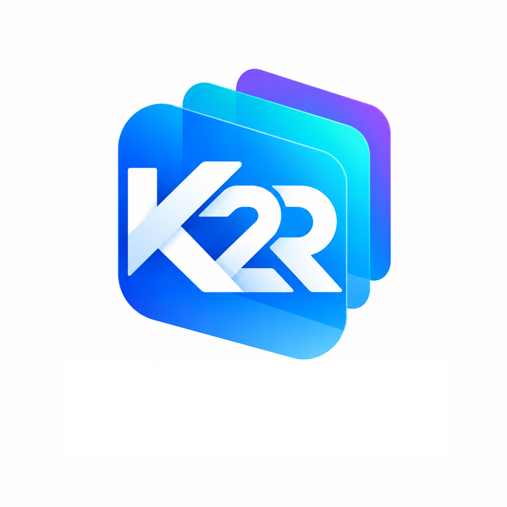
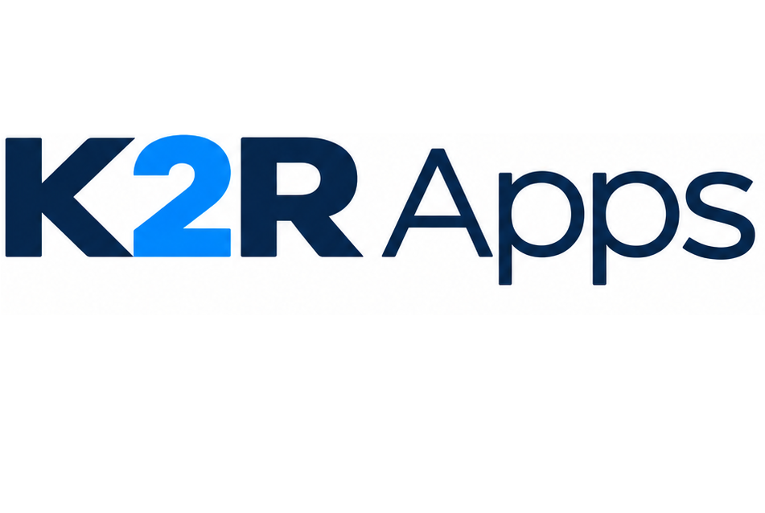

K2R Auto
Un projet automobile en développement, consacré à la consultation ciblée d’informations techniques selon le véhicule et l’intervention.
En savoir plus →

À propos
K2R Apps développe progressivement des services numériques centrés sur la clarté, la fiabilité et des usages concrets.
Un projet automobile en développement, consacré à la consultation ciblée d’informations techniques selon le véhicule et l’intervention.
En savoir plus →Un assistant de diagnostic actuellement en test fermé, pour progresser avec méthode dans les réparations du quotidien.
Découvrir K2 Repair →Chaque produit est conçu avec une attention particulière portée aux sources, à la qualité des informations et aux conditions techniques nécessaires à son déploiement.